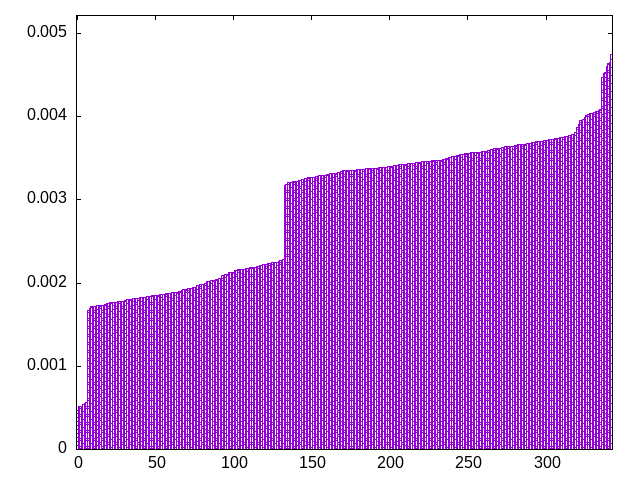
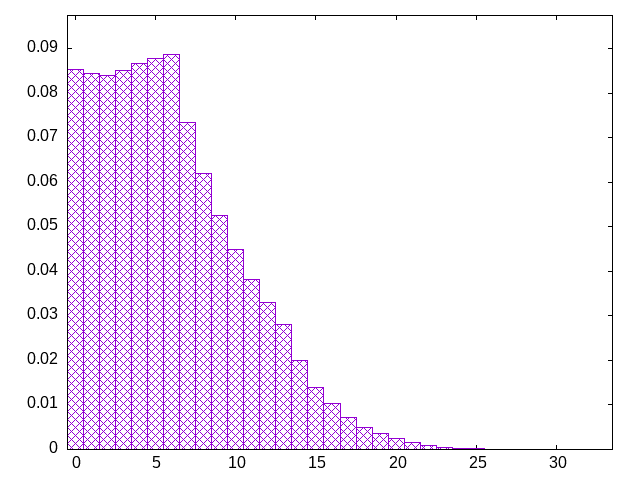

pieces are drawn from a bag (the window) which is refilled by a second bag
window=7, fixed second bag
olijztsiljoiljoztjstzosisjlozjitzsoljsitlliotlsztoztsiitjjojllzsztzossijjtitzojllstolzsiijstoiotszijojzloltzsiztsjzlliojitstolijsjtziozillsljztzosoitijosozljsltzztijisosjotilzslzojltioizjjlslisoltzzisttojjlzltstoiotjssiljisoolzjzizlstjzlootizistjtzjtolzslloijsjizstsojlttlosijiozlzitjliztsjjitsojioloslzsttzjoislzltojojtlssozztjizzjlitisjoiitoslilzloosjstzszitzltsoiijlzjojloztjlstltsozjisliiztoiljstozlisojjzojzsitzoljslttzstsizjjisitljztolosioljliozsztojtizjsozsltjilljsitoiszoltozotiijjzzosjsllzitittsolzoisltjosizojjzlillttsojilszsjoltitsilsjozzjtlizoisosjoltzttlojsjzioijztzssijzljlitoilltoszslttoszijizjsztliostlojojljzzitojlzsoissltiijtzotzsiljojoltsszjijoiolstjtzoltjlzilsstzljiosizitljzolztoisjtsljojtltioizziossjtillsszztjzslojijoitolzztolosiisjjsttizltzlijloossoitjlozitszzjjtjisootzltslojilisjszzltiosojtzjtzlioisltzijtojzlsjzlsooiltjszztjliiztsjlsooosltiisjiojlzszillttjooszzsltjtljoozstiljsijzziotsozjltiotitsllzsijzotiolijlsjzjtstoojzililsoztssiziljtstojizozlsojtilzoiztsszjjilotjoztls
bagginess: 0.0280
bagginess6: 0.3475
distribution1_maxgap: 1.000000000001e-06
distribution2_maxgap: 0.008472008472008472
distribution3_maxgap: 0.0011410022820045641
distribution4_maxgap: 4.8000144000431995e-05
diversity: 5.2
entropy: 11.374
evenness_diff: 7.613
evenness_same: 4.515
maxdrought: 30.4
maxflood: 4
peakdrought: 5.3
repchance: 0.0858
seq4_coverage: 1.0000
seq4_follow: 6.945
distribution3_graph:

drought_graph:

similarity: (lower is more similar)
| 0.091 | wet2 |
| 0.120 | deepbag_window4 |
| 0.131 | shirts2 |
| 0.134 | shirts_smooth2 |
| 0.135 | deepbag_fixed4 |
| 0.140 | wet3_size12 |
| 0.145 | bag2 |
| 0.148 | shift7 |
| 0.152 | weight_lin_pure |
| 0.159 | seamless_deep_pure |
| 0.172 | weight2 |
| 0.192 | weight |
| 0.200 | balanced5 |
| 0.217 | deepbag_fixed10 |
| 0.247 | seamless_bag2_pure |
| 0.253 | seamless_bag3_pure |
| 0.299 | nes_pure |
| 0.305 | deepbag_window7 |
| 0.307 | bag3 |
| 0.310 | deepbag_window10 |
| 0.312 | balanced_long_add_pure |
| 0.319 | shift10_5 |
| 0.321 | balanced7 |
| 0.328 | bag |
| 0.330 | bag4 |
| 0.336 | wet_pure |
| 0.343 | bag_pure |
| 0.345 | shift21 |
| 0.350 | nes |
| 0.356 | balanced9 |
| 0.360 | shift3_5 |
| 0.361 | wet3 |
| 0.372 | tgm |
| 0.373 | tgm_pure |
| 0.373 | balanced_long_mul_pure |
| 0.378 | shift14 |
| 0.454 | wet |
| 0.532 | weight_exp |
| 0.534 | wet2_size100 |
| 0.535 | fullrandom_pure |
| 0.554 | fullrandom |
| 0.563 | tgm_tap |
| 0.590 | tgm_tap_pure |
| 0.611 | weight_exp_pure |
| 0.647 | ti |
| 0.678 | seamless_bag_pure |
| 1.324 | shirts |
| 1.579 | shirts_smooth |
| 2.021 | shift1_75 |
| 2.434 | repeat_recent_pure |
| 4.632 | repeat_last_pure |
| 7.927 | flatbag |
| 7.927 | flatbag_pure |